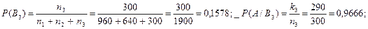

Розрахункові формули:
Хід роботи:
Задача: На трьох, автоматизованих системах при однакових умовах і незалежних умовах виготовляють деталі одного найменування. На першій лінії виготовили n1деталей, з них k1стандартних, на другому п2 деталей, з них k2 стандартних, на третьому п3 деталей, з них k3 стандартних.
1) Знайти імовірність того, що випадково взята деталь виявиться стандартною.
2) Випадково взята деталь виявилась нестандартною, яка імовірність того, що вона
виготовлена на другій автоматизованій системі?
Позначимо А-подією « взята деталь – стандартна». Відносно будь-якої деталі можна сказати, що В1-деталь вироблена на першій лінії, В2-на другій, В3-на третій.
n1= 960k1= 900n2= 640k2= 600n3= 300k3= 290

Висновок: В ході виконання практичної роботи я навчився розв’язувати задачі на модель Байєса. Розібрався як знаходити ймовірність події В враховуючі всі гіпотези. І перевірив логічну відповідність відповідей.